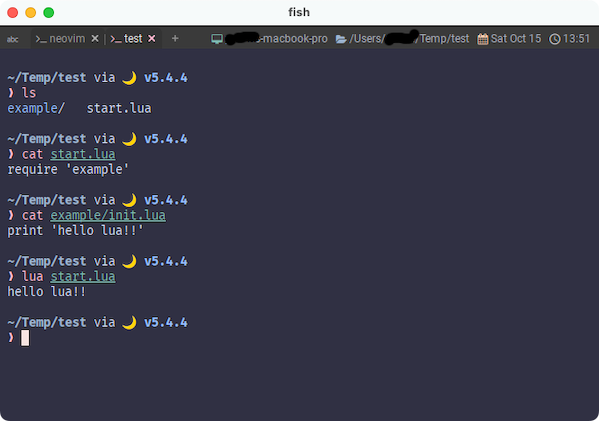
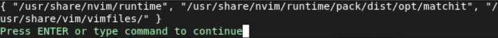

Lua Module
なんと、これに関しては日本語に訳されたドキュメントが存在します。
登っていきましょうとか言っておきながら、まずは掘り下げます😅
Luaモジュールは、runtimepath内のlua/フォルダにあります (ほとんどの場合、*nixでは~/.config/nvim/lua、Windowsでは~/AppData/Local/nvim/luaを意味します)。
このフォルダにあるファイルをLuaモジュールとしてrequire()できます。
runtimepath
一個ずつ見ていきますが、runtimepathはNeovimで以下のコマンドを使用することで確認できます。
いきなりちょっと複雑でしたね😅
頑張ってコマンドを打つと、出力の中に "~/.config/nvim"があるはずです。1
(上の例はunixなので"/home/utm-user/.config/nvim")
ここにluaディレクトリを作成することで、上に示されている「ほとんどの場合」に合致できます。
runtimepath絡みでもう一つポイントがあります。
runtimepath内にある特定のフォルダからLuaファイルを自動的に読み込めます。 現在、次のフォルダがサポートされています。
- colors/
- compiler/
- ftplugin/
- ftdetect/
- indent/
- plugin/
- syntax/
逆に言うと、luaディレクトリは自動では読み込まないぞ❗ということですね。
luaディレクトリに置いたファイルは~/.config/nvim/init.luaからrequire()で読み込んでいきましょう。
require()
require()はWezTermでも使いましたね。
WezTermの時はwezterm.lua と同じディレクトリにあるファイルを読み込むことにしか使用していませんでしたが、
もうちょっと高機能です。
次のLuaコードはmyluamodule.luaをロードします。:
require('myluamodule')
.lua拡張子がないことに注意してください。
同様に、other_modules/anothermodule.lua のロードは次のように行います。:
require('other_modules.anothermodule')
-- or
require('other_modules/anothermodule')
パスの区切りはドット.またはスラッシュ/で示されます。
フォルダにinit.luaが含まれている場合、ファイル名を指定せずにロードできます。
最後の一文は、
require('example')
とした場合にexample/init.luaをロードできるよ❗ってことですね。これらはNeovimに限ったものではなく、Luaの仕様みたいです。
全く関係ないところでやってみても以下のような動作になりました。

~/.config/nvimディレクトリが存在しないとruntimepathからもいなくなるようです。ディレクトリの存在を事前に確認してる?🤔
